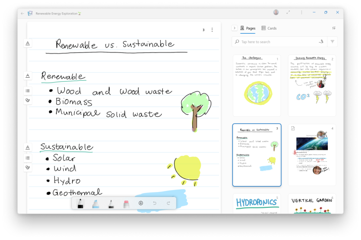

 A little over a year after its initial release, a digital note-taking app called Journal is making the leap from being an experimental project housed with Microsoft’s internal incubator, Microsoft Garage, to becoming a full-fledged Microsoft Windows application. The company this week announced the new note-taking app will now be available as “Microsoft Journal,” allowing users to capture their thoughts and create drawings using their digital pen on Windows tablets, 2-in-1s and other pen-capable devices. The original idea behind Journal was to offer users an alternative to grabbing a pen and paper when inspiration strikes, while still allowing them to express themselves through writing. The concept was familiar to the company, which had first launched an ink-focused application called Journal back on its Tablet PC in 2002 and continued to release “ink” capabilities across apps like Whiteboard, OneNote, PowerPoint and more, the company explained at the time. Journal, however, wanted to push the concept forward by combining the digital ink input with AI technologies. The team trained the app’s AI to automatically recognize and categorize the things users write, including headings, starred items, keywords and even drawings. For some of the drawings and headings, the app puts a cue on the side of the page that users can tap to select the content and then take other actions like “move” or “copy.” The AI also helped to improve the app’s search capabilities so you could pull up your old notes, lists, sketches and more, based on its understanding of your inked notes and content. And the AI helped to power new gestures, like scratch out and instant lasso — tools you could move between more easily, without mode switches. Image Credits: Microsoft Beyond its AI focus, Journal included drag-and-drop support for moving content to other pages or different applications; the ability to markup PDFs; keyword search with filters; Microsoft 365 integration for meeting notes; using touch to scroll through pages or tap ink to select text; and more. “We are entering an age of computer-aided reasoning, where AI accelerates the tasks that people do, and makes us all more productive,” said Stevie Bathiche, technical fellow and leader of Microsoft’s Applied Sciences, speaking about the app’s exit from Garage. “Journal shows just how powerful an experience can be when software anticipates your intentions. This is just the beginning.” During its time as a Garage project, the team learned that users have their own individual preferences for how they interact with content using touch and a digital pen, but there wasn’t a clear winner as to the most preferred method. They also found that annotating documents was one of Journal’s biggest use cases, with PDF imports accounting for over half the pages created in the app. With the app’s official launch, Journal has been updated with a Windows 11 look and feel, with new colors and materials. The team says its focus in the near term is to now address user feedback and a backlog of new features. The app is rolling out to users from April 5 through April 8 but can be downloaded directly from the Microsoft Store. It works on both Windows 10 and 11 devices.
Leave Your Comments here: